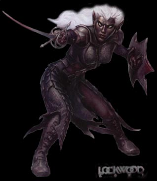

| 고블린 | | | 놀 | | | 코볼트 | | | 아울베어 |
| 스켈레톤 | | | 구울 | | | 자이언트 스콜피온 | | | 자이언트 비틀 |
| 트로글로다이트 | | | 헬 하운드 | | | 셰도우 엘프 | | | 가고일 |
Shadow Elf
|  | (룰북에 셰도우 엘프가 존재하지 않기 때문에 유사한 종족인
드로우(Drow)로 대체함.) 이 인간형의 생물은 인간에 비해 호리호리하고 작다. 피부는 새까맣고 머리카락은 흰색이다. 룰 상에서의 묘사 다크 엘프로도 알려져 있는 드로우는 타락하고 악한 엘프의 한 분파이다. 머리색은 대부분 흰색이지만 간혹 창백하고 그늘진 색도 존재한다. 눈은 거의 대부분 빛나는 붉은색 이다. 드로우는 엘프 종족 중에서도 좀 더 작고 가냘픈 편이다. (텔'아린이나 텔'엘레논의 경우 일본 판타지의 영향을 받은게 아닌가 싶다......) 이들의 사회는 모계사회이며 성직자들이 엄격하게 통제를 한다. 드로우들의 주신은 거미의 여신 'Lolth'다. 여성 드로우의 경우 위자드 보다 클레릭을 선호하며 혼돈(Chaos), 파괴(Destruction), 악(Evil), 책략(Trickery)의 네가지 영역 중 하나를 선택하게 된다. 드로우는 대부분 화살에 강력한 독을 발라 놓는다. (SOM에서 독화살이 안나오는 것은 참 다행이다.) 공용어와 엘프어, 지하세계의 공용어를 사용한다. 어둠의 종족이라 그런지는 몰라도 밝은 빛에 약한 편이다. (남성의 경우 위저드를 선호하고 여성의 경우 클레릭을 선호 한다고 한다.) |
| 평균 HP | 56 - 떡갈나무 요새(6) 이전 / 148 - 떡갈나무 요새(6) 이후 | ||||||||||
| 격파시 획득 XP | 1000 | ||||||||||
| 등장 스테이지 | 일반 병사 : 에잉모어 상공(4) ~ 절망의 숲(5-A), 숲의 다리(5-C) ~ 떡갈나무 요새(6) / 미로의 숲(8-A) ~ 잃어버린 세계(9-B) / 게이트 웨이(10-1) ~ 오버츄어(10-2) / 배틀 로얄(10-4) 궁수 : 숲의 다리(5-C) / 배틀 로얄(10-4) 투창 투척병 : 숲의 다리(5-C) / 미로의 숲(8-A) ~ 잃어버린 세계(9-B) / 배틀 로얄(10-4) 마법사 : 에잉모어 상공(4) ~ 숲의 다리(5-C) |
||||||||||
| 드랍 가능한 아이템 | 돈 : 5sp x 1 ~ 10sp x 1 (5~10sp)
★ - 떡갈나무 요새(6) 이후 부터 드랍 가능 ★ - 사용가능한 클래스가 있을 경우 드랍 가능 ※ 해머의 경우 대부분 클레릭이 있을 경우에 나오며 LB오일의 경우 대부분 클레릭, 드워프가 있을 경우에만 나온다. 한번 LB오일이 나오면 그 후로 자주 나오는 경향이 있다. |
||||||||||
| ※ 드랍 되는 아이템은 | '돈 + 점수 아이템 1점 + 그외 아이템 1점'으로 구성된다(물론 드랍 되지 않을 확률도 있다.) | ||||||||||
| 스틸 가능한 아이템 |
|
||||||||||

게임상에서 가장 다양한 형태로 등장하는 몬스터.
그러나 패턴은 그다지 어렵지 않기 때문에 상대하기가 무난하다.
그리고 스코어 어택시 점수도 꽤 짭짤하게 준다.
등장 방식
공중에서 텔레포트를 하면서 나타난다.
칼로 내려치는 공격을 하면서 내려오지만 대공능력이 있는 공격으로 충분히 격추가 가능하다.
궁수와 투창 투척병의 경우 화면 좌우측에서 나타나서 사격을 하고 텔레포트로 도망을 간다.
움직임의 패턴
플레이어와 거리를 유지하다가 텔레포트를 통해 공중에서 공격을 자주 시도한다.
여럿이 텔레포트를 하기 시작하면 좀 정신 없어지지만 뻔히 보이기 때문에 여러가지 콤보를 시도하기에 딱 좋다.
셰도우 엘프 마법사
스테이지 4와 5-C에서만 볼 수 있는데 와이번을 타고 배경에서 나타나서 파이어 볼을 시전하고 도망간다.
매직 미사일을 제외하면 명중시킬 수 있는 공격이 없는데 스테이지 5-C에서는 바짝 붙어서 D키로 격추가 가능하다고
한다. 그런데 매직 미사일이나 D키로 명중을 시키면 HP막대의 이름이 와이번(wyvern)으로 나온다.
(참고로 보면 알겠지만 와이번의 그림은 블랙 드래곤의 재활용이다.)
공격 패턴
| 스테이지 | 에잉모어 상공(4) | 절망의 숲(5-A) | 숲의 다리(5-C) | 그 이후 |
| 근접, 공중 공격 데미지 |
19 / 22 | 19 / 30 | 19 / 27 | 19 / 32 |
| 화살 데미지 | - | - | 15 / 23 | 15 / 23 |
| 투창 데미지 | - | - | 18 / 27 | 18 / 27 |
| 파이어 볼 데미지 |
25 / 32 | - | 25 / 32 | - |
※ 붉은색은 파이터가 입는 데미지, 푸른색은 매직 유저가 입는 데미지.
클레릭/드워프는 파이터에 가까운 데미지를, 시프/엘프는 매직 유저에 가까운 데미지를 입는다.
| 근접 공격 1 칼로 푹 찌르는 공격. 리치가 제법 길다. 대부분은 찌르거나 베는 공격을 연속으로 이어서 한다. |
|
| 근접 공격 2 칼로 베는 공격. 근접 공격 1 보다는 리치가 좀 짧다. 베는 공격 후에 내려치는 공격을 이어서 하는 경우가 많다. ※ 좀 의외의 거리에서 - 예를 들면 플레이어가 약간 뒤에 있는데도 - 공격을 하는 경우도 있다. |
|
| 텔레포트 후 공중 공격 텔레포트로 사라졌다가 플레이어 위에서 나타나서 칼로 베는 공격이다. 뻔히 보이는 공격인데 다가 판정도 좋은 편이 아니다. 어떻게 보면 여러가 지 콤보를 시도 해 보기에 좋은 상황을 만들어 준다고 볼 수도 있다. 그런데 간혹 일반 높이보다 낮은 위치에서 나타나는 경우가 있다. 이경우 움직임간의 딜레이 자체는 같지만 낮은 위치에서 나타나는 만큼 훨씬 빠르 게 공격이 닫기 때문에 플레이어 쪽에서 보고 대응하기가 쉽지 않다. 그리고 정말 주의해야 할 점이 있다면 가끔 2명 이상이 같은 위치에서 나 타나서 공격 하는 경우가 있는데 이들의 공격이 정확히 겹쳐서 맞으면 공 격자의 머릿수 만큼 배로 피해를 입는다는 것이다. 흔한 상황은 아니지만 맞으면 뼈아프니 조심하자. |
|
지원 사격
| 마치 보우놀 처럼 화면 양쪽에서 나타나서 화살을 3~5발 쏘고 텔레포트로 도망간다. 드워프는 서 있더라도 맞지 않으며 디스플레이서 클록(displacer cloak)으로 피할 수 있다. | |
| 화면 양쪽에서 나타나서 투창을 던지고 텔레포트로 도망간다. 디스플레이서 클록(displacer cloak)으로 피할 수는 있지만 화살과는 달리 드워프도 서 있으면 맞는다. 그리고 클레릭의 경우 앉아 있어도 맞는다. (슬라이딩으로 피하거나 아예 위아래로 멀리 떨어져 있어야 한다.) ps.자세히 보면 던지는 모션과 창이 날아가는 타이밍의 싱크가 안맞는다. |
|
| 파이어 볼을 2~4발 시전 후 도망간다. 불 저항의 반지(ring of resist fire), 주문 무효화 반지(ring of spell tur- ning)가 있다면 피해를 입지 않는다. 파이어 볼의 궤도가 플레이어가 서 있는 지점으로 정확하게 날아오지 않고 약간 묘하게 엉뚱한 위치로 날아가는 경우도 있으나 그 점 때문에 안맞을 것 같은 위치에서 맞는 경우도 있다. 점프나 무적기로 확실하게 피하자. 드워프는 점프보다는 롤링어택이 회피용으로 적합하다. |
대처법/주의점
짧게 날아오는 공중 공격과 겹쳐서 내려오는 공중 공격만 주의하면 크게 어려울 것이 없다.
파이터, 엘프의 경우 A공격 도중에 뒤에서 점프 공격을 해 오더라도 A공격이 먹히면서 제압이 된다.
시프는 앞에서 날아오는 점프 공격은 A공격으로 차단이 되지만 특유의 몸이 쏠리는 현상 때문에 뒤쪽에서의 공격은
조금 힘들다. 클레릭은 A공격의 판정이 약해서 점프 공격으로 견제를 하는게 좋다.
드워프는 판정은 좋지만 느려서 타이밍 맞추기 쉽지 않으니 그냥 점프 공격으로 차단하거나 살짝 피하는게 좋다.
콤보 연습 상대로 딱 좋으니 여러가지 콤보를 시도해 보자.
알아도 그만, 몰라도 그만인 정보
| 스테이지 10-4 처음 구간의 마지막에서 나오는 적들을 재빨리 물리치면 마지막에 투창 투척병들이
멀리서부터 뛰어 오는데 이녀석들은 창을 던지지 않고 칼을 들고 나타난다. 그러나 아무리 빨리 잡으려 해도 시간이 다되서 도망가기 일쑤라 제대로 보기는 힘들다. |